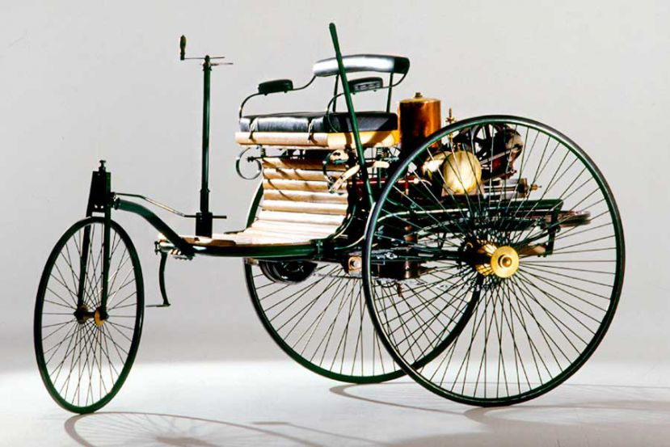
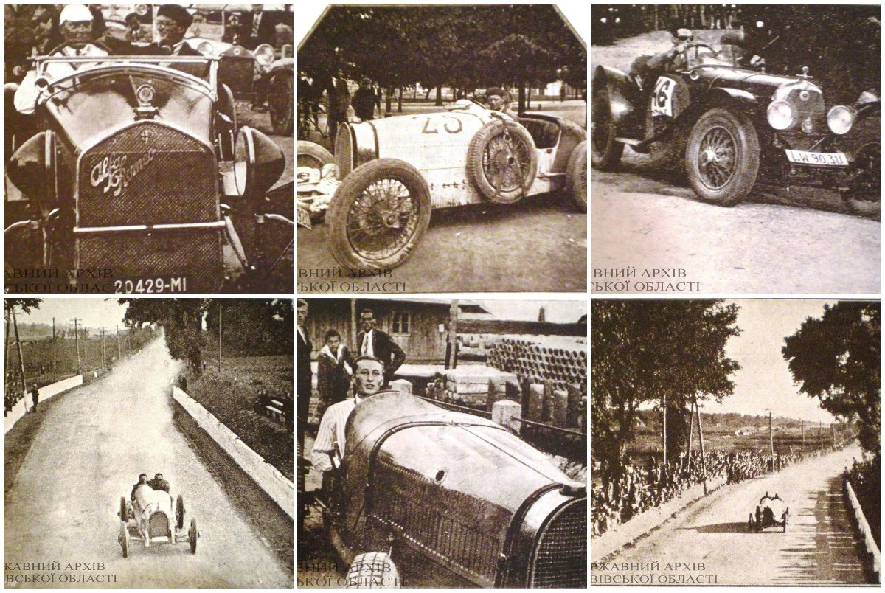
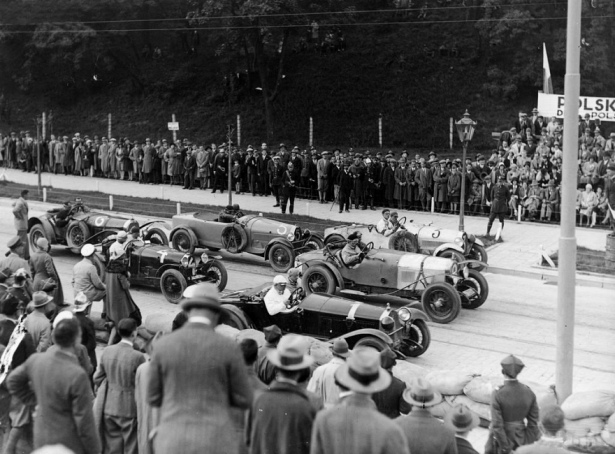
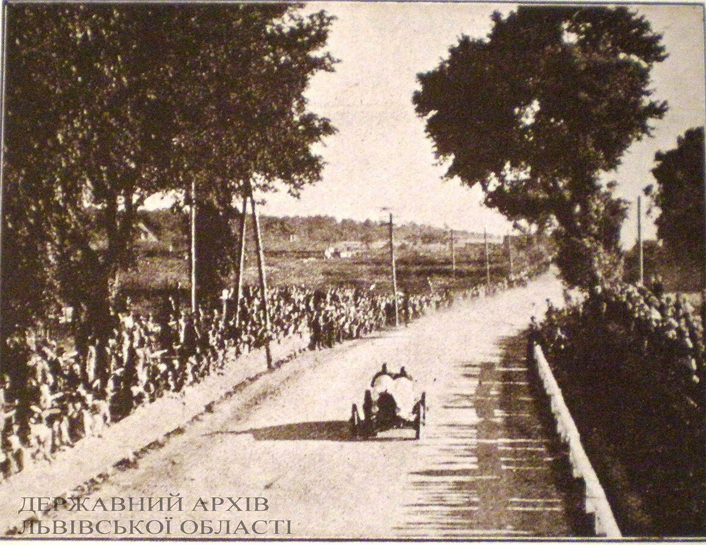
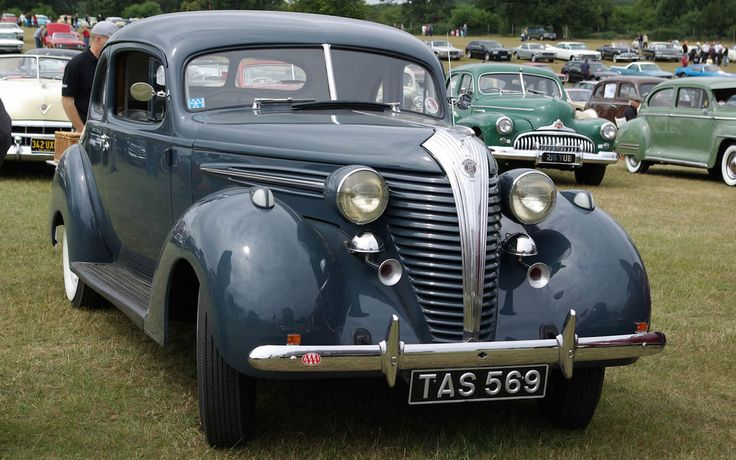
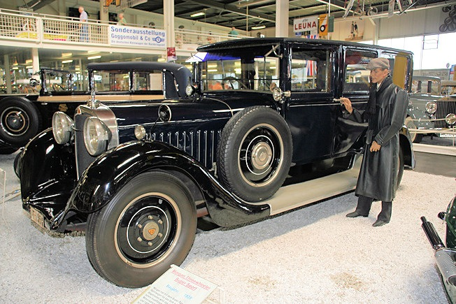
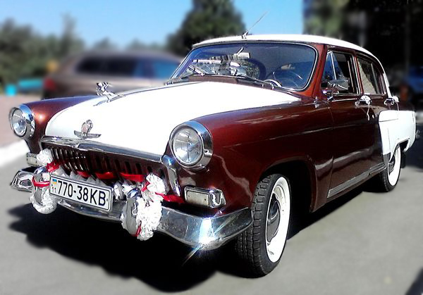

Дату 29 січня 1886 року офіційно вважають днем народження автомобілів. Його творцем став Карл Бенц, людина, котрій автомобіль
багато чим завдячує, у тому числі й фактом свого народження. Майбутній винахідник народився 25 листопада 1844 року в німецькому місті Карлсруе. Його батько був залізничником, тому з технікою маленький Карл запізнався дуже рано, що визначило його
вибір: після закінчення гімназії хлопчик вступив до Політехнічного ліцею у тому ж таки Карлсруе.

Сталеливарне виробництво виявилось не найкращим місцем для вкладення капіталу і, не встигнувши розгорнутися як слід, збанкрутувало. Карл Бенц, опинившись поза бортом, вирішує впритул узятися за розв’язання проблеми теплових двигунів,
яка цікавила його ще з часів навчання в ліцеї.
Чотиритактний двигун на той час уже існував, тому Бенц присвячує себе розробці двигуна лише з двома тактами. Два роки він працює як одержимий, і от, у новорічну ніч 1879 р., настала довгоочікувана мить: двигун запрацював.
Двомісна машина , керована за допомогою румпеля, розвивала швидкість до 15 км/год. Заради справедливості слід сказати, що перша поїздка була короткою — всього 100 метрів, оскільки паливний бак не був передбачений, а запасу пального
в пляшці, що замінювала його, вистачило ненадовго.
Окрім паливного бака, з часом на автомобілі було встановлено потужніший мотор робочим об’ємом 1,7 літра і двоступінчасту коробку передач. Виробництво Benz Patent-Motorwagen почалося 1890 року, а через три роки з’явилась
і чотириколісна модель Viktoria з ще одноциліндровим, але тепер уже 2,9-літровим двигуном потужністю 3-5 к.с.



Перші учасники автоперегонів "Гран-прі Львів" 1925р. Першим фінішував в Парижі німецький автомобіль «Протос» 11 липня, другим 26 липня до фінішу прийшов американський екіпаж. Але переможцем був визнаний американський екіпаж. Німецький автогонщик був оштрафований на 15 днів
у зв'язку з тим, що його автомобіль після поломки був доставлений в Сіетл по залізниці.
Він називався «Нью-Йорк — Париж без допомоги пароплава»і стартував у день народження Лінкольна , 12 лютого з Нью-Йоркською площі Таймс-сквер. У ньому брали участь дев'ять автомобілів з Америки, Франції, Італії, Німеччини.



1-1938 hudson terraplane coupe ; 2- Maybach W5 SG 27/120PS Pullman-Limousine ; 3-Volga Gaz-21 1960